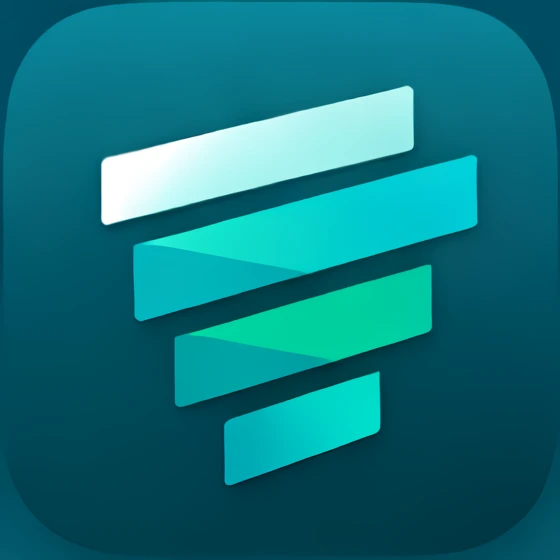

Filto is an RSS reader that lets you decide what to read—instead of leaving it to an algorithm. Mute topics with keywords, and shape a feed that fits you as you read.
Free to download on iOS and Android. No account required.
iOS / Android対応・無料でダウンロード。アカウント登録は不要です。
Free includes up to 10 filters. Filto Pro removes ads and unlocks higher limits.
無料版はフィルタ10件まで登録できます。Filto Proで広告オフ・上限解除。

A quieter feed, shaped by you.
少し静かな、 自分だけのフィードに。
Only the sources you follow — filtered by your own rules. When a filter catches something it just disappears, with a quick count showing how much it's doing.
No account requiredアカウント登録不要Data stays on your deviceデータは端末内に保存Light / dark themeライト / ダークテーマEnglish / Japanese support日本語 / 英語対応Save favoritesお気に入り保存Choose article retention (90 / 180 days / unlimited)記事保持期間を選べる（90日 / 180日 / 無制限）